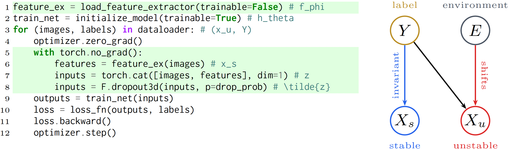

1MIT 2Harvard Medical School
In Review

Figure 1. (Left) RepreSeg code overview. (Right) Probabilistic graphical model motivating our approach.
We present RepreSeg, a simple and theoretically-grounded approach for domain generalization in 3D biomedical image segmentation. Modern segmentation models degrade sharply under shifts in modality, disease severity, clinical sites, and other factors, creating brittle models that limit reliable deployment. Existing domain generalization methods rely on extreme augmentations, mixing domain statistics, or architectural redesigns, yet incur significant implementation overhead and yield inconsistent performance across biomedical settings. RepreSeg instead proposes a principled learning strategy with minimal overhead that leverages both source-domain image intensities and domain-stable foundation model representations to train robust segmentation models. As a result, RepreSeg achieves strong gains in both fully supervised and few-shot segmentation across a broad range of shifts in biomedical studies. Unlike prior approaches, RepreSeg is architecture- and loss-agnostic, compatible with standard augmentation pipelines, computationally lightweight, and tackles arbitrary anatomical regions. Our implementation is publicly available.
Design inspired by horwitz.ai.